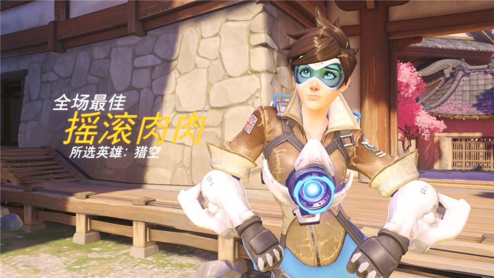
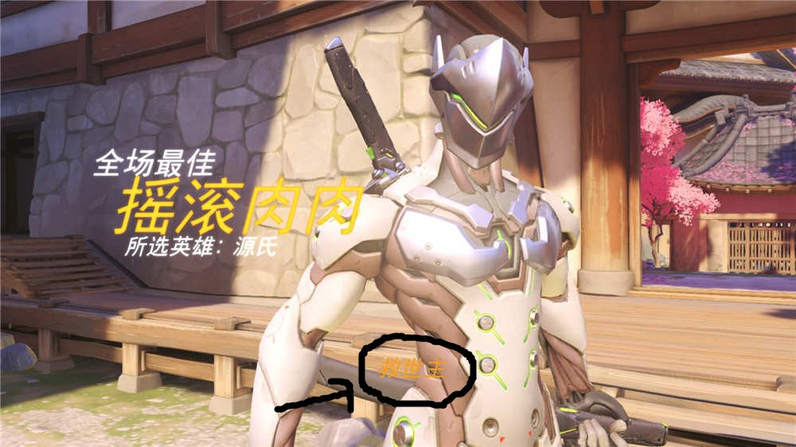

全场最佳机制
玩守望先锋的时候会在每场比赛结束的时候出现一个全场最佳的精彩镜头。守望先锋会捕捉游戏中4种类型的精彩镜头，然后对比这些瞬间，找出那一轮中最佳的精彩镜头成为最后的全场最佳。如果你的镜头也足够精彩，但是最终没有上全场最佳，那么就会被纪录到你自己的亮眼表现中。
高评分全场最佳
最常见的全场最佳的镜头，这个分类趋向于纪录一次多杀以及快速的连续击杀。更高的多杀与更快的连杀，越接近目标点，都会得到更高的评分。此外，天使重生技能原理相同，一次性复活多个人，越接近目标点，评分越高。
除了多杀与连杀之外，要注意的越靠近目标点的多杀连杀，分数也会更高。像一些控制地图上，死神在点上大招连杀几乎是必上最佳镜头的。天使在点上一次复活3个人以上，那也基本上可以拿到镜头。
如果本场最佳的分类是高分，那就不会显示镜头分类。其他3个分类的最佳镜头在底部中间会显示出镜头的分类。
所以要打出这个最佳镜头的方法基本上最简单了，在尽量靠近点上的地方连杀或全体复活。
救世主最佳镜头
这个分类趋向于记录一个玩家在另外一个玩家马上就要死了的情况下救了他。例如：一个莱因哈特冲锋撞上了一个敌人，而敌人的队友把莱因哈特眩晕或者击杀，那么敌人的队友就会获得一个很高的“救世主”评分。
注意这个分类底下中间会有分类的名称表示这是一个救世主类型的最佳镜头。神枪手跟终结者同理。
这个镜头显而易见是记录一些极限操作的，无论是队友还是对手都会印象深刻。虽然救世主的分类听起来有点类似辅助的镜头，但是目前来看，卢西奥跟禅雅塔的大招，天使的加血这些瞬间拯救的队友并不会上救世主的镜头。所以这里的救，指的是阻止了敌人来挽救，而不是给自己治疗来挽救。